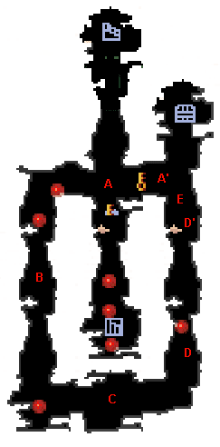
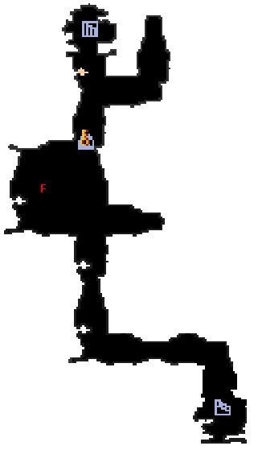

| 概要 | 情報 | アイテム一覧 |
| 敵キャラ一覧 | ステージ一覧 | 夢幻迷宮について |
| 攻略チャート | Zwei!! 攻略へ |
| ステージ選択へ |
クロップ洞窟 Lv.16
|  | |
A  |
A地点にはキノコがあります。 A'地点の苗床へ移動させればいいのですが、ほぼステージを1周しなければなりません。 |
| B | B地点では、トゲが2つ通路を移動しています。 キノコを押していると動きが遅くなるので慎重に移動しましょう。 |
C |
C地点のろうそくに灯をともすと敵がたくさん現れます。 キノコはその場に放置して、敵を倒しましょう。 |
| D | D-D'間はトゲが移動しています。 通路も狭いので慎重に移動しましょう。 |
| E | E地点ではトゲが横方向に高速で移動しています。 キノコをその場に残し、トゲの向こう側から磁石を使うのも手です。 |
|  | |
F |
F地点のボタンスイッチを押すと、敵がたくさん現れます。 同時に、主人公の周囲を風船が取り囲み、移動できなくなります。 素早く風船を割り、体勢を立て直してから敵に挑みましょう。 |
| ステージ選択へ |
| 概要 | 情報 | アイテム一覧 |
| 敵キャラ一覧 | ステージ一覧 | 夢幻迷宮について |
| 攻略チャート | Zwei!! 攻略へ |
Zwei!!
| 目次へ戻る | ページの上部へ |